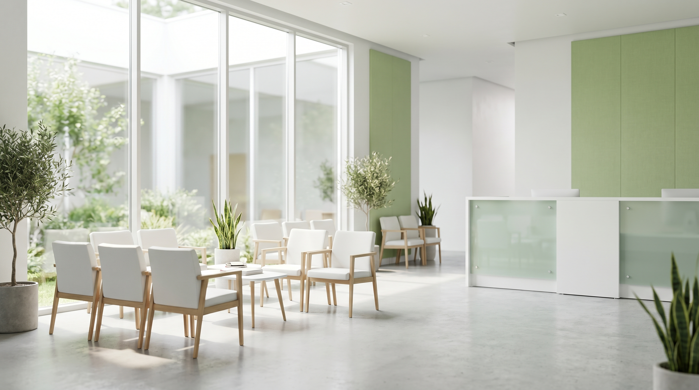

診療時間 9:00〜12:30 ／ 15:00〜18:00（木・日・祝休診）
4月よりリニューアル開院しました。これまで通院の方も引き続き安心してご来院ください。
地域のかかりつけ医として、4月リニューアル開院
健康診断の数値が気になる方、忙しくて通院が難しい方、 長くお薬を続けている方。お一人おひとりの状況に合わせて、 丁寧にお話を伺います。

GREETING
これまでの「かかりつけ」を、
そのまま受け継ぎます。
このたび、長く地域の皆さまに親しまれてきた当院を継承し、 内科・生活習慣病を中心に診療を続けてまいります。 これまで通院されていた患者さまのお薬や検査の経過は、 可能な限り引き継ぎ、これまでと変わらず安心して通っていただける体制を整えました。
あわせて、お仕事や介護でご来院が難しい方のためにオンライン診療を導入し、 「続けやすい医療」を目指してまいります。どうぞよろしくお願いいたします。
院長 〇〇 〇〇 内科／日本内科学会 認定内科医
FEATURES
「要再検査」「要精密検査」と言われた方の、その後の検査・経過観察に対応します。
お仕事や介護でご来院が難しい方も、スマートフォンから診察・処方を受けられます。
駅から徒歩圏・バリアフリー対応。平日夕方まで診療し、長く通える環境です。
FOR YOU
血圧・血糖・コレステロール・肝機能の数値で「要観察」「要再検査」と 指摘されたまま、そのままになっていませんか。早めにご相談いただくことで、 生活習慣の見直しやお薬で対応できる場合があります。 まずはお気軽にお話を聞かせてください。
血圧が高めと言われた
血糖・HbA1cが気になる
コレステロール・中性脂肪が高い
肝機能（γ-GTP等）で再検査
DEPARTMENTS
かぜ・発熱・腹痛など、日常の体調不良を幅広く診察します。
高血圧・糖尿病・脂質異常症の継続的な管理とお薬の調整。
健康診断・人間ドックで指摘された項目の再検査・経過観察。
インフルエンザ等の予防接種に対応（要予約）。
※ 診療内容は一般的な情報であり、効果を保証するものではありません。症状により専門医療機関をご紹介する場合があります。
ONLINE
状態が安定している生活習慣病の方などを対象に、 スマートフォンやパソコンから診察・お薬の処方を受けられます。 お仕事の合間や、ご家族の介護で外出が難しい方にもご利用いただけます。
オンライン診療を予約する予約
WEBまたはお電話でオンライン診療枠をご予約。
診察
予約時間にビデオ通話で医師が診察します。
お薬の受け取り
処方箋を薬局へ送付。ご自宅近くで受け取れます。
HOURS & ACCESS
| 受付時間 | 月 | 火 | 水 | 木 | 金 | 土 | 日祝 |
|---|---|---|---|---|---|---|---|
| 午前 9:00〜12:30 | ● | ● | ● | 休 | ● | ● | 休 |
| 午後 15:00〜18:00 | ● | ● | ● | 休 | ● | 休 | 休 |
休診：木曜・日曜・祝日／受付は診療終了30分前まで／オンライン診療は所定の時間帯のみ